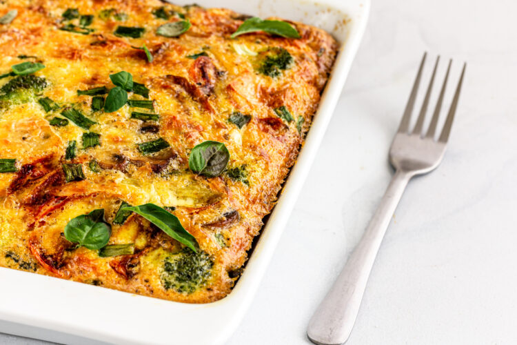

Egg Souffle Recipe

About the Egg Souffle
The egg souffle is a very simple dish, with many possible ingredients depending on what sort of flavor you like.
I personally like a basic combination of ingredients in order to make this quick, and still provide a lot of flavor!
Ingredients
- 6 eggs
- 1 cup of milk
- 1 cup of shredded cheese
- 1/2 cup of mixed vegetables
- 1/2 lb of ground beef
Steps
- Begin by panfrying the ground beef until browned, then drain liquid and add seasoning as desired.
- Crack the raw eggs into a metal pan, and add the cooked ground beef.
- Combine the cheese and mixed vegetables into the pan as well, and stir until it is mostly consistent (some of it may sink, that is okay).
- Add the cup of milk and stir even more, until there is a nice spread of the meat and vegetables.
- Place pan into oven at 375 degrees Fahrenheit.
- Take the pan out of the oven, the top should be brown when finished
- Allow to cool for at least 5 minutes, then slice into however many pieces you would like.
- Enjoy this delicious and easy to make meal! The leftovers taste just as good microwaved the next day.